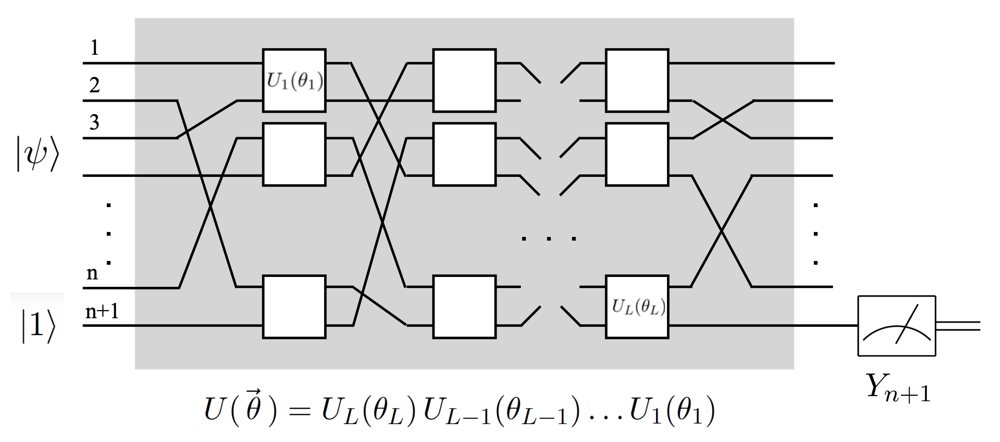
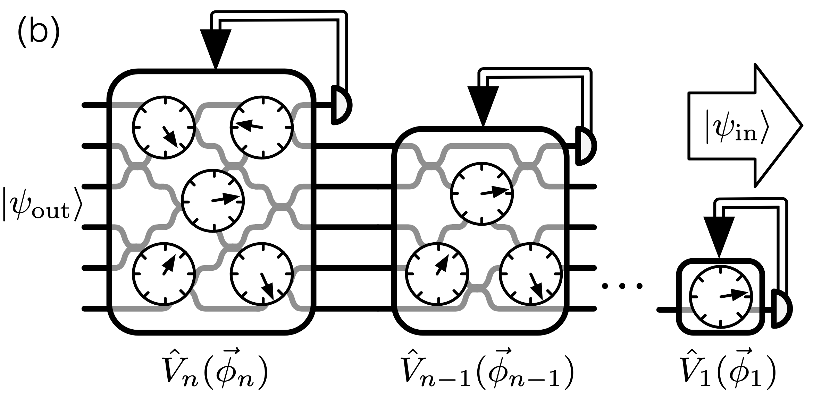

Variational Quantum Unsampling

Introduction
Variational Quantum Unsampling (VQU) is an algorithm recently developed to take into account the limited computational powers of NISQ computers, and described in this arXiv paper. The code and some descriptions here were helped out by a challenge which was part of the University of Edinburgh’s quantum computing hackathon, found on their GitHub
This notebook serves as a complement to the one on creating supremacy circuits. If you have not taken a look at that or if you are not familiar with Google’s proposed pseudo-random generating supremacy circuits, take a look at that for context first.
The whole point of quantum supremacy circuits is that the algorithm which they encode cannot be replicated on a classical computer. That begs the question, however, as to how we can be sure that the quantum computer actually gave us the correct answer. We’re short on verification tools in this space. The need for verification will become more and more important as NISQ computers may be used to develop new chemical compounds – we need to be able to check the accuracy of quantum algorithm results before we blindly trust its results.
Enter Variational Quantum Unsampling. This algorithm is designed to variationally “undo” the operations performed on the circuit. If we consider some quantum circuit to be represented as some unitary $U$ acting on the inputs of the quantum circuit, then VQU attempts to find that $U$:
\begin{align} |\psi_o\rangle = U|\psi_i\rangle \end{align}
More specifically, the algorithm does this by applying some parameterized unitary operation, $V(\theta)$, on the state $|\psi_o\rangle$ in order to return it to the reference state, $\left|\psi_i\right>$. In other words, it attempts to find the inverse of the target unitary, $U$, such that:
\begin{align} |\psi_i\rangle = V(\theta)U|\psi_i\rangle \end{align}
This is achieved by minimizing some cost function, relative to the parameters, $\theta$, which describes the discrepancy between the target, and the current state of the system at any point during the optimization procedure.
Quantum Neural Networks Relationship
The method for VQU was largely inspired by quantum neural networks (QNN). I wrote another [notebook]() addressing the specifics of QNN, so check it out if you’re interested!
QNN work by optimizing over a set of parameters in some defined gate operations. The parameters are optimized by a classical optimizer to find the parameters which correspond to the correct output. Similarly, VQU works by optimizing gate parameters for some chosen gates, except that it does so multiple times, bu disentangling one qubit at a time from the state space.
The following is an illustration of a QNN:

In contrast, the following is an example of a VQU:

Here, we can see each time that we would need to optimize for some $\theta$.
Basic Implementation
First, let’s go ahead and import all the basics that we need when working with PyQuil
from pyquil import Program
from pyquil.api import get_qc, WavefunctionSimulator, local_qvm
from pyquil.gates import *
import numpy as np
# as well as our classic optimizer
import scipy.optimize as opt
And let’s define an extra gate that we’ll need to use
from pyquil.parameters import Parameter, quil_sin, quil_cos
from pyquil.quilbase import DefGate
# Define the new gate from a matrix
theta = Parameter('theta')
crx = np.array([
[1, 0, 0, 0],
[0, 1, 0, 0],
[0, 0, quil_cos(theta / 2), -1j * quil_sin(theta / 2)],
[0, 0, -1j * quil_sin(theta / 2), quil_cos(theta / 2)]
])
gate_definition = DefGate('CRX', crx, [theta])
CRX = gate_definition.get_constructor()
Now, let’s construct the circuit on which we will run VQU.
def create_trial_circuit(circuit, qubits):
target_two_qubit_angle = 0.444
target_single_qubit_angle = 0.7822
circuit += RY(target_single_qubit_angle, qubits[0])
circuit += CRX(target_two_qubit_angle)(qubits[0], qubits[1])
Since this is a two qubit circuit, we’re going to have two major steps to this VQU. The first step will be finding the parameters to bring qubit 1 to the state $|0\rangle$.
def cost_func_two_qubit_gate(params, qubits):
circuit = Program()
circuit += gate_definition # We need to define the new gate in each program we use it in.
ro = circuit.declare('ro', 'BIT', 1)
create_trial_circuit(circuit, qubits)
# apply some trial gate to otimize our angle
circuit += CRX(params[0])(qubits[0], qubits[1])
# print('The current parameter value is:', params[0])
circuit += MEASURE(qubits[1], ro[0])
circuit.wrap_in_numshots_loop(num_trials)
executable = qc.compile(circuit)
results = qc.run(executable)
prob_zero = list(results).count([0])/num_trials
# We want to minimise this value, by making the probability of observing qubit *one* in the state |0> close to 1
cost_func = 1 - prob_zero
return cost_func
Note that in this particular example we have chosen to apply the same gate to our “unsampling” as we have in the trial circuit. This is for the sake of first simple example. We’ll use more gritty scenarios later in this notebook.
Now let’s go ahead and run our optimizer.
qc_name = "2q-qvm"
qc = get_qc(qc_name)
qubits = qc.qubits()
num_trials = 10000
params = np.random.rand(1)
result = opt.minimize(cost_func_two_qubit_gate, params, args=(qubits), method='Powell')
print('The optimised parameter value found is: ', result.x)
The optimised parameter value found is: -0.4813267098032141
We found the first parametrized value! Now time to do the same thing but for qubit 0. Below is another function which will run after the first angle is optimized.
def cost_func_both_gates(params, optimised_two_q_param, qubits):
circuit = Program()
circuit += gate_definition # We need to define the new gate in each program we use it in.
ro = circuit.declare('ro', 'BIT', 1)
create_trial_circuit(circuit, qubits)
circuit += CRX(optimised_two_q_param)(qubits[0], qubits[1]) # using the previously found parameter
circuit += RY(params[0], qubits[0]) # new gate put in to find the second paramter
# print('The current parameter value is:', params[0])
circuit += MEASURE(qubits[0], ro[0])
circuit.wrap_in_numshots_loop(num_trials)
executable = qc.compile(circuit)
results = qc.run(executable)
prob_zero = list(results).count([0])/num_trials
# We want to minimise this value, by making the probability of observing |0> in qubit *zero* close to 1
cost_func = 1 - prob_zero
return cost_func
We can plug in the angle we found in the previous run and optimize for this second angle.
optimised_two_q_param = np.asscalar(result.x)
params = np.random.rand(1) # start with another random parameter for this run
result_single_qubit_opt = \
opt.minimize(cost_func_both_gates, params, args=(optimised_two_q_param, qubits), method='Powell')
optimised_single_q_param = result_single_qubit_opt.x
print('The optimised parameter value found is: ', optimised_single_q_param)
The optimised parameter value found is: -0.7723922231661331
Checking Our Results
Now we can take the two angles found and apply them to our constructed circuit. Thereby checking for the condition
\begin{align} \left|\psi_i\right> = V(\theta)U\left|\psi_i\right> \end{align}
And seeing how close we got to the input state of $|00\rangle$
make_wf = WavefunctionSimulator()
optimised_params = np.array([optimised_two_q_param, optimised_single_q_param])
circuit_optimised = Program()
circuit_optimised += gate_definition # We need to define the new gate in each program we use it in.
ro = circuit_optimised.declare('ro', 'BIT', 1)
create_trial_circuit(circuit_optimised, qubits)
# Applying our "unsampling" operations here
circuit_optimised += CRX(optimised_params[0])(qubits[0], qubits[1])
circuit_optimised += RY(optimised_params[1], qubits[0])
with local_qvm():
wavefunction = make_wf.wavefunction(circuit_optimised)
print(wavefunction)
print(wavefunction.get_outcome_probs())
(0.9999629694+0j)|00> + (0.0048423694+0j)|01> + 0.0026796731j|10> + 0.0065901938j|11>
{'00': 0.9999259401560409, '01': 2.3448541541007383e-05, '10': 7.180647922794661e-06, '11': 4.3430654495366794e-05}
Checking our results, the VQU did well! We’re back to the $|00\rangle$ state with good accuracy.
More Complex Examples
Now let’s run our same method of VQU, but this time we can define a different circuit to run our algorithm on. This way we can check how well the algorithm can actually work.
def create_trial_circuit(circuit, qubits):
circuit += H(qubits[0])
circuit += CNOT(qubits[0], qubits[1])
return circuit
Now that we changed the function of the trial circuit, we can run exactly the same code as we ran before. First we optimize for qubit 1, then for qubit 0, and then we can check how well we got the circuit back to the initial state.
result_two_qubit_opt = opt.minimize(cost_func_two_qubit_gate, np.array(params[0]), args=(qubits), method='Powell')
optimised_two_q_param = np.asscalar(result_two_qubit_opt.x)
print('The optimised parameter value found is: ', optimised_two_q_param)
params = np.random.rand(1)
result_single_qubit_opt = \
opt.minimize(cost_func_both_gates, params, args=(optimised_two_q_param, qubits), method='Powell')
optimised_single_q_param = result_single_qubit_opt.x
print('The optimised parameter value found is: ', optimised_single_q_param)
optimised_params = np.array([optimised_two_q_param, optimised_single_q_param])
circuit_optimised = Program()
circuit_optimised += gate_definition # We need to define the new gate in each program we use it in.
ro = circuit_optimised.declare('ro', 'BIT', 1)
create_trial_circuit(circuit_optimised, qubits)
# Applying our "unsampling" operations here
circuit_optimised += CRX(optimised_params[0])(qubits[0], qubits[1])
circuit_optimised += RY(optimised_params[1], qubits[0])
with local_qvm():
wavefunction = make_wf.wavefunction(circuit_optimised)
print(wavefunction)
print(wavefunction.get_outcome_probs())
The optimised parameter value found is: 3.13466307165333
The optimised parameter value found is: -1.0631845000285267
(0.609526782-0.3584348752j)|00> + (-0.3584370267-0.6095231233j)|01> + (0.0012419069+0j)|10> + (0.0021118787+0j)|11>
{'00': 0.4999984576672817, '01': 0.49999553996851026, '10': 1.5423327181163183e-06, '11': 4.460031489581977e-06}
Note what happened this time. We kept our “unsampling” circuit the same, and it was not able to untangle the Bell state. We have equal probability of the $|00\rangle$ state as well as the $|01\rangle$ state.
Another Example
Now we can try the same approach, but with yet another circuit.
def create_trial_circuit(state, qubits):
theta = Parameter('theta')
crtest = np.array([
[1, 0, 0, 0],
[0, 1, 0, 0],
[0, 0, quil_cos(theta / 2), -quil_sin(theta / 2)],
[0, 0, quil_sin(theta / 2), quil_cos(theta / 2)]
])
gate_definition = DefGate('CRTEST', crtest, [theta])
CRTEST = gate_definition.get_constructor()
state += gate_definition
state += H(qubits[0])
state += Z(qubits[0])
state += CRTEST(np.pi/42)(qubits[0], qubits[1])
return state
result_two_qubit_opt = opt.minimize(cost_func_two_qubit_gate, np.array(params[0]), args=(qubits), method='Powell')
optimised_two_q_param = np.asscalar(result_two_qubit_opt.x)
print('The optimised parameter value found is: ', optimised_two_q_param)
params = np.random.rand(1)
result_single_qubit_opt = \
opt.minimize(cost_func_both_gates, params, args=(optimised_two_q_param, qubits), method='Powell')
optimised_single_q_param = result_single_qubit_opt.x
print('The optimised parameter value found is: ', optimised_single_q_param)
optimised_params = np.array([optimised_two_q_param, optimised_single_q_param])
circuit_optimised = Program()
circuit_optimised += gate_definition # We need to define the new gate in each program we use it in.
ro = circuit_optimised.declare('ro', 'BIT', 1)
create_trial_circuit(circuit_optimised, qubits)
# Applying our "unsampling" operations here
circuit_optimised += CRX(optimised_params[0])(qubits[0], qubits[1])
circuit_optimised += RY(optimised_params[1], qubits[0])
with local_qvm():
wavefunction = make_wf.wavefunction(circuit_optimised)
print(wavefunction)
print(wavefunction.get_outcome_probs())
The optimised parameter value found is: -0.04057073475865205
The optimised parameter value found is: 1.5613149700366853
(0.9995384668+0.000377419j)|00> + (-0.0042860746-0.0003810145j)|01> + (0.0186029294+0.0100867359j)|10> + (-0.0187801519-0.0101828281j)|11>
{'00': 0.9990772890769184, '01': 1.8515607891615624e-05, '10': 0.00044781122263651166, '11': 0.0004563840925529468}
Our circuit worked out pretty well in this case!
Conclusions
VQU is a quantum neural network approach to verification for NISQ computers. It provides another demonstrably working tool to use for quantum computer scientists, and a possibility to keep building on it.
This is a very interesting new tool, one that we can hopefully learn to better use.
)